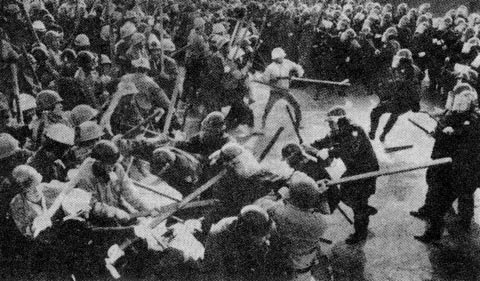

Influencias
Vimos que el éxito de una obra tan importante como la Mona Lisa probablemente se deba a una razón accidental. A lo mejor si el robo de 1911 no se hubiera perpetrado, en la actualidad el objeto de arte más famoso del mundo sería otro, no podemos saberlo. Por lo tanto no podemos explicar el éxito de la Mona Lisa en función de sus atributos propios. Podemos razonar, circularmente, que la Mona Lisa es la obra de arte más importante del mundo porque tiene los atributos propios de la Mona Lisa.
Pero, ¿qué pasa con el éxito de obras como Harry Potter, por ejemplo? ¿Por qué Harry Potter es tan exitoso y tanta gente compra sus libros y ve las películas? ¿Es por su calidad intrínseca? ¿Es producto de la publicidad? Hay críticas que explican que Harry Potter “explota una serie de estereotipos que ilustran la envidia, intolerancia, una maldad profunda que aumenta la tensión, con algunas sentencias morales sobre el valor del coraje, la amistad, el poder del amor, en un ambiente de fantasía y magia. Es la suma de todos estos atributos aseguran su éxito masivo.” Otra vez tenemos el razonamiento circular, Harry Potter es exitoso por tener los atributos de Harry Potter. Eso no explica nada. Las razones están fuera de los atributos o características de esta serie de libros. La explicación de como se pudo lograr que millones de lectores compararan estos libros es la piedra filosofal de todo editor moderno (si me permiten la broma).
Como vimos en al artículo anterior, una solución común es la adopción de un modelo basado en una entidad o agente representativo. Se trata de entender el comportamiento del consumidor promedio, a partir de la observación o conjeturas sobre el comportamiento de esta entidad abstracta. Perfilamos al lector promedio de Harry Potter y a partir de eso modelamos un nuevo producto adaptado a ese lector ideal. Esto no funciona, por supuesto, porque es una explicación de sentido común que falla al ignorar las interacciones entre individuos.
Esto queda claro al analizar el trabajo del sociólogo Mark Granovetter en su “modelo de los umbrales para los motines (riots)”. El modelo es bastante simple, consideren una multitud hipotética, donde cada persona decide participar de actos de violencia dependiendo si hay otras personas cometiendo actos de violencia. En este modelo cada persona tiene su “umbral de violencia”, están los instigadores, que empezarán con los desordenes aunque nadie más esté dispuesto a la violencia, en este caso su umbral es cero. Están los que tienen un umbral de uno, es decir, acuden a la violencia sólo si otra persona está cometiendo actos violentos, lo que tienen umbral 2, es decir, cometen actos de violencia si hay 2 personas haciéndolos, y así. Los umbrales van desde el ultra violento de umbral cero, al pacifista a ultranza tipo Ghandi que nunca ocupará la violencia, aunque todo el resto de la muchedumbre esté peleando (es decir, su umbral es infinito). Cada grupo tendrá su distribución única y particular de estos umbrales de violencia.
Un ejemplo de estas distribuciones de umbrales de violencia es el siguiente, tenemos un grupo en que el primer individuo tiene un umbral de cer0, así que empieza la violencia, el segundo individuo tiene un umbral de 1 por lo tanto se une al primero, el tercer individuo tiene un umbral de 2, se une al grupo, el cuarto individuo tiene un umbral de 4, el quinto individuo tiene un umbral de 5, los demás individuos tienen umbrales mayores a 5, la violencia no prospera, el acto termina pacíficamente con pocos incidentes.
Supongamos ahora que tenemos dos muchedumbres, A y B, con la misma cantidad personas, del mismo tipo, por ejemplo, son todos estudiantes, en los mismos rangos etarios, que además están reclamando por la misma causa (la política gubernamental en educación), sólo que en ciudades distintas y con distribuciones de umbrales de violencia ligeramente diferentes. Por ejemplo, puede que el grupo A se diferencie del grupo B en sólo una persona, la que tiene un umbral levemente inferior a su contraparte. Lo que puede suceder es que la muchedumbre A genera desordenes y violencia, y en el caso B no se produce ningún acto de vandalismo, todo por esta mínima diferencia. En la ciudad A la protesta termina con detenidos, daños a la propiedad pública, heridos, etc. En la ciudad B la protesta termina pacíficamente y se disuelve después de un rato. Por supuesto nosotros sabemos que las probabilidades de que se produzcan actos de violencia son distintas porque conocemos estas distribuciones, porque inventado estas distribuciones de probabilidad sobre la violencia de estos grupos. Pero dos observadores externos tratarían de buscar explicaciones a los resultados distintos de las protestas en A y B. Los observadores trataría de conjeturar las causas que llevaron a la violencia en A y no en B. Quizás en A la policía fue más agresiva, quizás el grupo A estaba más enojado, o despesperado que el grupo B, quizás en el grupo B había un dirigente más explosivo que generaba más pasión en su audiencia, etc. Todas explicaciones de sentido común, la razón real, de que el umbral de violencia era apenas superior en B con respecto a A es algo que queda oculto a estos observadores. Aparte del umbral de violencia, no hay nada en este experimento mental que diferencie a la muchedumbre A del grupo B. Y este punto es super importante, porque la única manera en que un modelo de agente representativo, “el estudiante protestante promedio”, pueda explicar las diferencias es que hubieran diferencias en las propiedades promedios de las dos poblaciones, y eso no se da, porque hemos construido dos grupos que son iguales en todas las propiedades observables.

En el modelo de Granovetter no importa el modelo de comportamiento individual que se tenga, porque se las poblaciones son indistinguibles unas de otras. La única diferencia está dada por el grado de interacciones entre individuos, lo que requiere que revises la secuencia completa de decisiones que cada individuo realiza en función del comportamiento de los demás. Este modelo deja claro la importancia de las micro interacciones entre individuos.
Por cierto este es un modelo muy simple de influencia entre individuos, pero sirve para resaltar esta propiedad importante, las micro interacciones son las importantes. En los próximos artículos exploraremos cómo se pueden explorar las maneras en que nos influenciamos unos a otros en las redes sociales.